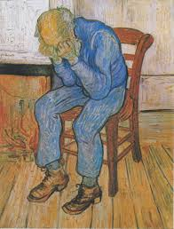

Sorrowing old Man
Sorrowing old Man é uma pintura de Vincent Van Gogh que fez em 1890, o quadro dele descreve um velho chorando por razões desconhecidas, exibindo sofrimento mental com sentimentos insanos de tristeza, agora acabei de descobrir que o motivo da tristeza desse homem foi o fato dele nunca poder admirar uma mulher tão linda como você.
